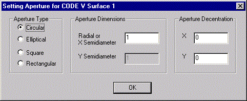

The second step in the translation process is to select the ASAP filename, and to set several translation options.
The translator constructs a default name for the ASAP file from the CODE V SEQ filename that you enter in the Step 1 dialog. To change the name of the ASAP file, enter the new name in the box under Select ASAP File.
The translator overwrites an existing ASAP file if you accept the default ASAP filename or type an existing filename into the box.
If you are unsure whether the file currently exists or want to protect an existing ASAP file, click BROWSE. The translator displays a Save As dialog. You can review the contents of the current directory and enter a new filename. The translator does not overwrite an existing file if you click the BROWSE button.
Translation Options
Annotate ASAP INR file Instructs the translator to write out explanations and comments interspersed with the ASAP commands. This is useful for novice users who wants to understand more about ASAP syntax, or for documentation purposes. (Default: no check)
Translate dummy surfaces “Dummy surfaces” are defined by this translator as surfaces that have the same refractive media on each side and are coincident with the subsequent surface. Although these types of surfaces are commonly used in lens design programs to restore coordinate systems in tilted and decentered systems, they can mislead the physical raytrace algorithm in ASAP and cause raytrace errors. (Default: no check)
Create edges and bevels Lens designers are accustomed to the bevels and edges CODE V draws around the optical surfaces to denote physical construction. Some users also employ the CUM and THM options to add rear surfaces and edges to mirrors to give them a more realistic appearance. This option adds additional edge and bevel objects to the ASAP file to duplicate these functionalities. (Default: check)
The edge and bevel generation logic involves the following activities: The translator first identifies adjacent surfaces that could potentially be joined by an edge and possibly bevel(s). Next, the translator checks to see if either surface is reflecting, if either surface is an SPS CPC Type 2 or Type 3 surface, or if one of the surfaces is a dummy surface. In any of these cases, the translator cannot generate an edge or bevel.
The translator checks to see if the adjacent surfaces share a common axis and have no aperture decentrations. If these conditions are met, the translator then checks to see if the apertures have the same dimensions. In this case only an edge is generated connecting the surfaces together. If the aperture dimensions of one surface are both smaller than the aperture dimensions of the other surface, a bevel is generated on the smaller aperture and an edge is generated to connect the larger surface to the bevel. If the aperture dimensions of one surface are not both smaller than those of the other surface, a bevel is generated on each surface and an edge is generated to connect the bevels.
If the surfaces do not share a common axis and/or have aperture decentrations, the translator simply connects the apertures with an edge. No bevels are generated.
The two surfaces do not require the same aperture shape. The translator generates an edge that connects a circular/elliptical aperture to a rectangular aperture if necessary.
A rear surface and edge are added to a mirror only if THM is nonzero. The curvature of the rear surface is given by CUM. If the mirror surface is an SPS CPC Type 2 or Type 3 surface, the rear surface and edge are not generated.
Edges, bevels, and rear mirror surfaces are modeled as absorbing objects (no INTERFACE command). You must add specular and scatter properties as necessary.
Make element color consistent overrides the ASAP default object color assignment by assigning the same color to all objects that comprise an optical element. Otherwise, each object is sequentially assigned a color from the ASAP palette of 27 colors. (Default: check)
This option is independent of the “Create edges and bevels” option.
Unassigned Apertures Since ASAP must know the actual apertures of each object, these must be supplied even if they are missing from the CODE V SEQ file. The translator allows for two options:
Prompt on surface-by-surface basis during translation The translator displays a Setting Aperture dialog box for each surface whose aperture information is missing. You can select the type of aperture (circular, elliptical, square, or rectangular), dimensions, and aperture decentration at that time. The translator does not accept a zero aperture dimension and issues a warning message if you enter one. (Default: select.)
Assign default semidiameter of XXX The translator assigns a default semidiameter of XXX to each surface whose aperture information is missing.
Once an aperture is entered on a given surface, it is used for all other zoom positions (if present). The translator does not prompt again for an unassigned aperture in another zoom position.
Coatings Most lens design programs, CODE V among them, do not permit rays to be split into reflected and transmitted components at refractive surfaces. However ASAP does support this feature (called “raysplitting”). The translator offers both options when it constructs the ASAP geometry:
Idealized (100%) transmission on all refractive surfaces All refractive surfaces are set to unity transmission; there is no reflective component. (Default: 100% transmission)
Transmission and reflection per Fresnel’s equations The translator constructs the interface properties of each refractive surfaces so that ASAP can compute the transmission and reflection of each ray during the raytrace subject to the ray’s wavelength, angle of incidence, polarization and so on.
By default the translator assigns a reflectivity of unity to each mirror (reflective) surface. You may change this by entering a new value into the edit box.
At the completion of the Step 2 dialog, click BACK to return to the first dialog, NEXT to continue, or CANCEL to exit the translator.